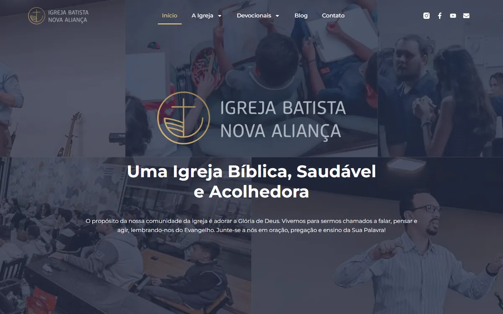
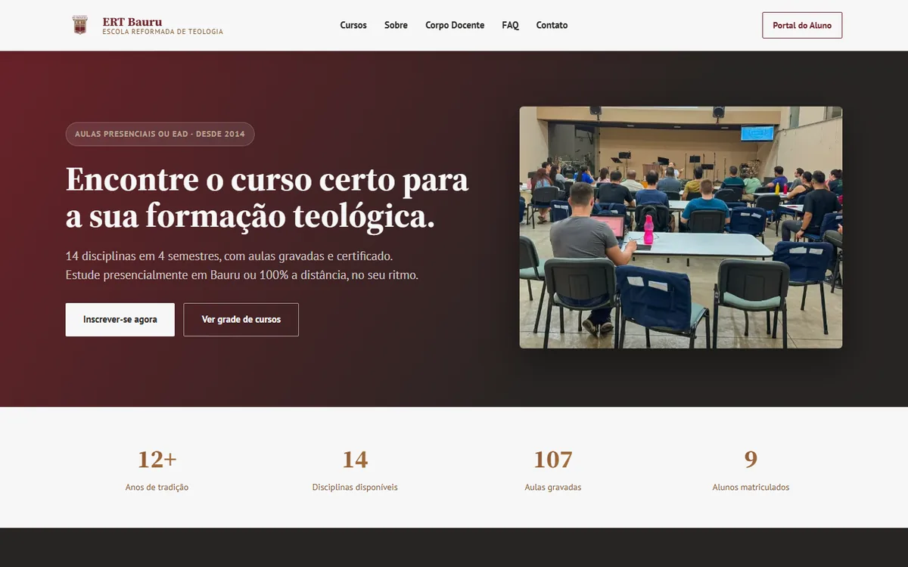
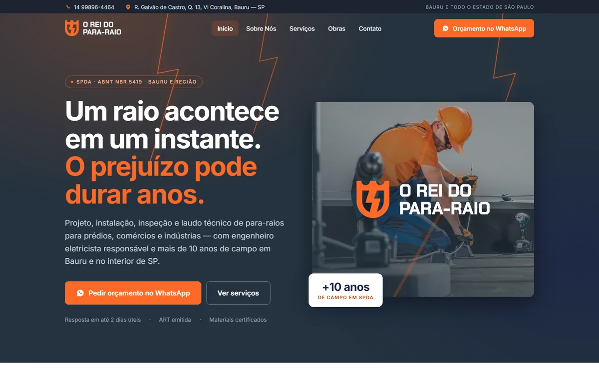
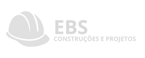
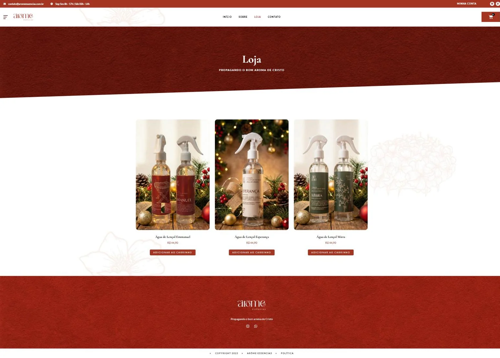
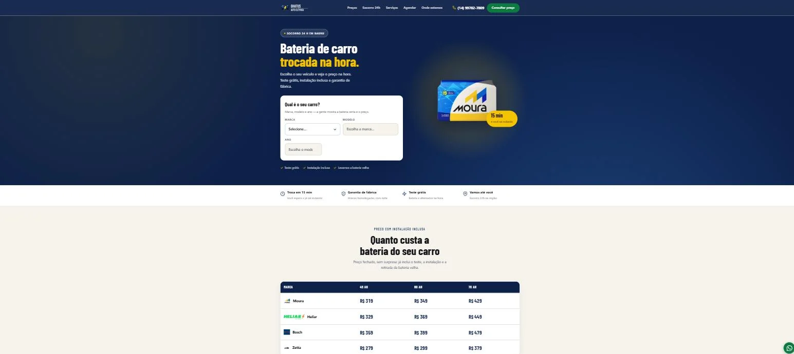

Igreja Batista Nova Aliança
Site institucional com agenda semanal de atividades, blog e estrutura pensada para quem chega pelo celular.
ibnabauru.com.br ↗Formado em Tecnologia em Banco de Dados e desenvolvedor front-end e back-end. Transformo processo manual em sistema que funciona sozinho: site que capta, loja que vende, automação que responde e painel que mostra o que está acontecendo. O que eu entrego fica em produção — e continua no ar comigo, no servidor, depois da entrega.
em produção

Site institucional com agenda semanal de atividades, blog e estrutura pensada para quem chega pelo celular.
ibnabauru.com.br ↗
Cursos divididos em módulos, vídeo-aulas e liberação programada de conteúdo conforme o aluno avança. O cliente publica aula nova sem depender de mim.
ertbauru.com.br ↗
Site de serviço local em código leve: uma página por serviço, dado estruturado para o Google entender a empresa e cabeçalhos de segurança configurados no servidor.
oreidopararaio.com.br ↗Plataforma de vendas de imóveis: catálogo com busca por características, página de anúncio e caminho direto do interessado até a negociação.
projeto privado
Site institucional da construtora: apresentação de obras e serviços, com foco em credibilidade e contato direto.
em manutenção
Loja completa em WooCommerce: catálogo com variações, carrinho, checkout, cálculo de frete e área do cliente. Operação encerrada pela cliente em 2025.
descontinuado
Landing de conversão desenhada primeiro para o celular, com WhatsApp fixo e caminho curto até o contato. Feita para receber tráfego de anúncio.
não publicadoMeu próprio sistema, em produção: funil e régua de cobrança, prospecção por CNPJ a partir dos dados públicos da Receita, chat de site com triagem por IA e auditoria automática de site e Google Meu Negócio.
util-app.com.br ↗o que eu uso no dia a dia
Sites institucionais, landing pages, plataformas de curso e lojas completas, com Elementor, ACF e tema sob medida quando precisa.
Sistemas sob medida do zero: modelagem de banco, regra de negócio, permissão por perfil e relatório. Base da graduação em Banco de Dados na Fatec Bauru.
Rotinas que tiram trabalho manual do caminho: bot de WhatsApp rodando como serviço com reinício automático, cobrança por Pix e Stripe, integração com API oficial de marketplace e tarefas agendadas.
Chat com triagem automática, busca sobre base própria com embeddings (RAG), conferência de produto por foto e diagnóstico técnico traduzido para linguagem de dono de negócio. Em produção, não em slide.
Servidor, DNS, e-mail com SPF, DKIM e DMARC, certificado, cabeçalhos de segurança, cópia automática e cron. Quem entrega também mantém.
React, TypeScript e Astro para site estático que carrega rápido e ranqueia: migração de WordPress para estático, componentes reaproveitados e build organizado em monorepo.
Coleta, tratamento e análise: SQL, Power Query e DAX no Power BI, scripts em Python. Dashboard comercial construído do zero.
bauru · sp
Criação de sites, lojas virtuais, sistemas sob medida e automações para negócios locais. Atendimento direto ao cliente, do escopo à entrega, com manutenção e servidor por minha conta.
Suporte técnico de nível pleno, atendimento a chamados e resolução de problemas complexos de hardware, software e conectividade. Organização e gestão de demandas internas.
Hardware, software e conectividade; instalação e configuração de sistemas e periféricos; manutenção e segurança de redes. Chamados via GLPI, atendimento remoto e documentação de procedimentos.
Grupo Lactalis · set 2021 → mar 2023
Walp Construções e Comércio · jul 2018 → jul 2019
fatec bauru · senai · cisco · anthropic
Fatec Bauru — Faculdade de Tecnologia
Anthropic
Cisco Networking Academy
SENAI São Paulo — tratamento e visualização de dados
SENAI São Paulo — aperfeiçoamento
Fundação Bradesco
SENAI São Paulo — aperfeiçoamento profissional
SENAI São Paulo — aperfeiçoamento profissional
resposta no mesmo dia
Site, loja virtual, sistema sob medida, automação ou manutenção de algo que já existe — me conta o que precisa resolver que eu digo o que dá para fazer, o prazo e o valor.